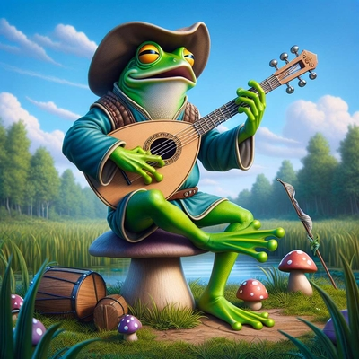

PYPX Songwriting
🧰 Songwriting Toolbox
Tools to support students in composing their Exhibition song.
All progressions work in the key of C. Each chord plays for one bar (4 beats) unless you decide otherwise.
The Classic Pop
Uplifting · Works for almost anything
Used in: "Let It Be", "No Woman No Cry", "I'm Yours"
Emotional Ballad
Reflective · Perfect for slow, heartfelt songs
Used in: "Someone Like You", "The Scientist"
Hopeful & Driving
Energetic · Great for action songs
Used in: "Stand By Me", "Count on Me"
Two-Chord Groove
Simple & powerful · Great for first songs
Let the rhythm do the work. Try strumming D-DU-UDU.
📖 Perfect Rhymes
🌀 Near Rhymes (slant rhymes)
AI Songwriting Assistants
Chatbots designed to help you write and brainstorm
Song Wizard
Recommends real songs about topics you care about to spark your songwriting ideas.
"I'm writing a song about [your topic]. Can you recommend 3 songs I could listen to for inspiration, and explain what makes each one powerful?"

Lyrical Mastermind
Helps you brainstorm rhymes, rewrite lines, and find words that fit your song's message.
"My song is about [your topic]. I have this line: '[your line]'. Can you suggest a second line that rhymes and continues the idea?"
🎤 Student Voices
Student reflections and brainstorming in preparation for the PYP Exhibition.